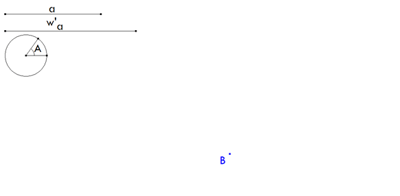
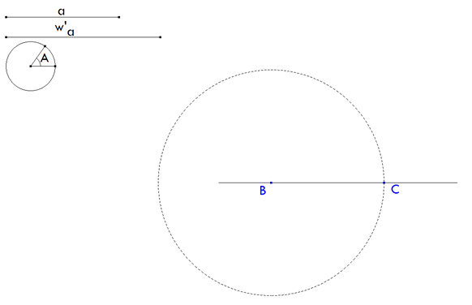
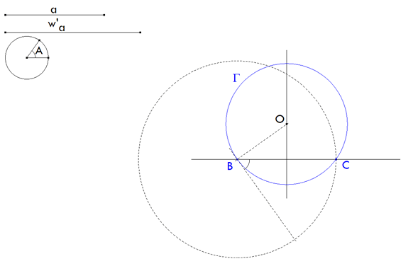
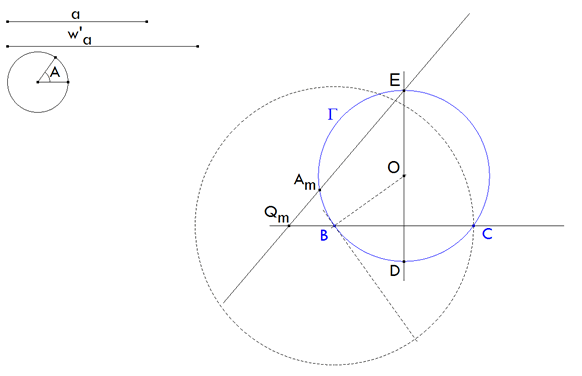
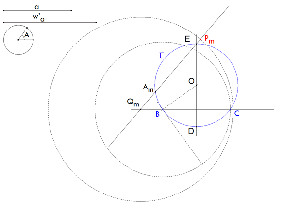
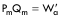
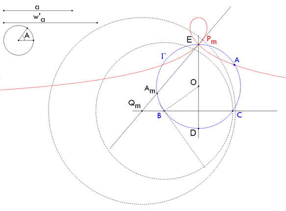
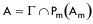

De investigación. Propuesto por Francisco Javier García Capitán, profesor del IES Álvarez Cubero (Priego de Córdoba)
Problema 284 429.- Construir un triángulo conociendo A, a, w'a (w'a es la bisectriz exterior de A)
Solución de José María Pedret, Ingeniero Naval. Esplugues de Llobregat (Barcelona). (2 de diciembre de 2005) |
|
INTRODUCCIÓN |
|
|
Sapiña, en su obra, expone multitud de problemas indicando siempre una solución susceptible de ser hallada mediante el uso de la regla y el compás. Teniendo en cuenta que estas páginas pretenden el estudio del triángulo por medio de CABRI, desarrollamos a continuación un método 100% CABRI para conseguir la construcción indicada en el enunciado. Sólo hay que recordar tres resultados de la geometría clásica usados repetidas veces en estas páginas de RICARDO BARROSO CAMPOS: primero En el círculo circunscrito a un triángulo rectángulo, la hipotenusa es el diámetro por cuyos extremos pasan los catetos. segundo Las dos bisectrices de un ángulo (en el triángulo) son perpendiculares entre sí. Tercero La bisectriz interior corta al círculo circunscrito en dos puntos, el vértice, y el punto medio del arco opuesto al vértice.
|
|
SOLUCIÓN (en 6 pasos) |
|
1 LOS DATOS
 figura 1
|
|
2 TRAZADO DE BC = a
 figura 2
|
|
3 TRAZADO DEL ARCO CAPAZ DEL ÁNGULO A
 figura 3 Mediante CABRI, giro de BC con centro en B y ángulo A. Perpendicular por B a la recta girada. Mediatriz de BC. Perpendicular y mediatriz se cortan en O. Con centro en O, trazamos el círculo Γ que pasa por B (y C).
Este círculo es el primer lugar geométrico sobre el que se encuentra el vértice A.
|
|
4 UNA BISECTRIZ EXTERNA CUALQUIERA
 figura 4 Tomamos un vértice móvil cualquiera Am sobre Γ. La mediatriz de BC nos da D sobre Γ. D es el punto medio del arco opuesto a Am. La otra intersección de la mediatriz con Γ nos da E. E es el punto diametralmente opuesto a D. Teniendo en cuenta la INTRODUCCIÓN, EAm es la bisectriz exterior de Am. Esta bisectriz corta a BC en Qm. |
|
5 INTRODUCCIÓN DE W’a
 figura 5

Lo que nos indica que existe un punto Am sobre Γ para el que Pm coincide con A. El lugar geométrico de los puntos Pm, cuando Am se desplaza sobre Γ, es el segundo lugar geométrico sobre el que se encuentra el vértice A. |
|
6 DETERMINACIÓN DE A
 figura 6

|